مسار القراءة العربيّة
للأطفال في أوروبا
Arabic Literacy Pathway · Arabisch geletterdheidstraject
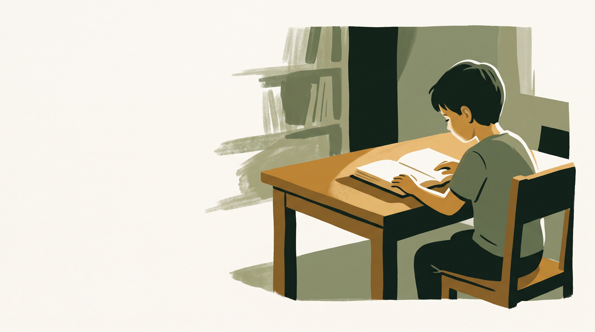
إلى مجلس مؤسّسة نماء
نكتب إليكم لأنّكم تعرفون هذه المشكلة قبل أن نصفها لكم: أطفالٌ في بيوت هولنديّة يسمعون العربيّة ولا يقرؤونها، وأسرٌ جرّبت أكثر من حلٍّ ولم يكتمل لها واحد.
نكتب إليكم تحديداً لأنّ ما نبنيه يحتاج إلى شيئين لا نملكهما: معرفةً بهذا المجتمع من داخله، وثقةً لا تُشترى بإعلان. وكلاهما عند نماء.
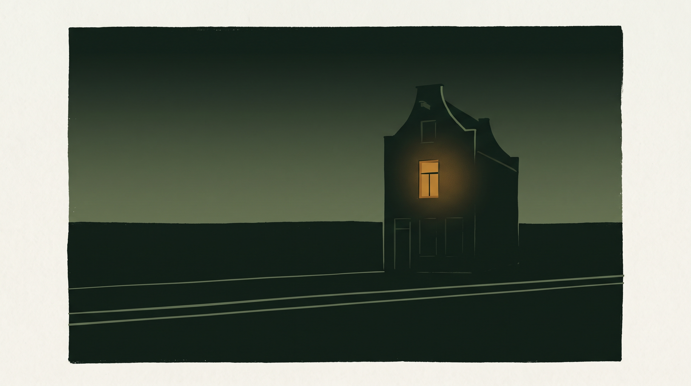
وما نعرضه ليس طلبَ تزكية. نبدأ بتجربةٍ داخل نماء تحكمون عليها بأنفسكم، ولا نطلب منكم أن تعرّفوا بها أحداً قبل أن تقتنعوا. فإن لم تقنعكم، فقد وفّرنا عليكم وعلينا سنةً من العمل.
ثلاثة حلول متاحة — ولا واحد منها صُمِّم لهذا الطفل
درسٌ في المسجد أو المركز
عشرون طفلاً بمستويات متباينة على معلّمٍ واحد لا يتكلّم لغتهم. يبدؤون بحماسة، وينسحب أكثرهم بعد أسابيع — لا لأنّ الطفل عجز، بل لأنّه لم يفهم التعليمات أصلاً.
تطبيقٌ على الهاتف
يعلّم أسماء الحروف ولا يصنع قارئاً. الطفل يعرف أنّ هذا الشكل اسمه «باء»، ولا يستطيع أن يقرأ كلمة.
معلّمٌ خاصّ
بلا منهج ولا سقفٍ زمنيّ ولا طريقةٍ لقياس التقدّم. تمضي سنة والأهل لا يعرفون: هل تقدّم ابننا فعلاً؟
والقاسم المشترك بين الثلاثة أنّ أحداً منها لم يُصمَّم لطفلٍ يعيش في أوروبا ولغته الأولى هولنديّة أو ألمانيّة أو فرنسيّة. كلّها مصمَّمة لطفلٍ يعرف العربيّة أصلاً، ثمّ نُقلت كما هي إلى سياقٍ مختلفٍ تماماً.
طفلٌ لا يقرأ العربيّة، يصير قارئاً للنصّ المشكول — بمعلّمٍ يتكلّم لغته
والمخرَج محدَّد وقابل للاختبار: أن يقرأ الطفل نصّاً عربيّاً مشكولاً لم يره من قبل، قراءةً صحيحة، بلا معاونة.
ليس «أن يتعرّف على الحروف»، ولا «أن يحبّ اللغة»، ولا «أن يكتسب الأساسيّات». هذه نتائج جميلة يصعب التحقّق منها. نحن نَعِد بمهارةٍ واحدة يستطيع الأب أن يتحقّق منها بنفسه: يعطي ابنه صفحة، فيقرأ.
وصدق العبارة يعنينا أكثر من وقعها: النتيجة النموذجيّة موثّقة، وليست ضماناً — الأطفال يختلفون، ودرجات الانتظام تختلف. ما نلتزم به هو الشفافيّة في القياس: معايير الاجتياز مكتوبة ومعلنة سلفاً، ونتائج كلّ دفعة تُعرض كما هي، بمن فيهم من لم يبلغ الهدف.
المعلّم يعبر بالطفل من لغته — ولا يشرح له بلغةٍ يجهلها
حين يقول معلّمٌ لطفلٍ هولنديّ في السابعة: «انظر إلى الفتحة فوق الحرف»، وهو يقولها بالعربيّة، فالطفل لا يتعلّم — يقلّد صوتاً. أمّا حين تُقال له بالهولنديّة، ثمّ يُنطق الحرف بالعربيّة، فقد بُني جسر: فهم القاعدة بلغته، وطبّقها على اللغة الجديدة.
معلّمونا ثنائيّو اللغة بالضرورة لا بالمصادفة. لغة الطفل شرطٌ في اختيار المعلّم كما أنّ إتقان العربيّة شرط.
والتدرّج مقصود: تبدأ الحصّة بلغة الطفل شرحاً وتنتهي بالعربيّة ممارسةً، وتقلّ لغة الوساطة كلّما تقدّم — حتّى يستغني عنها. لغة الطفل جسرٌ يُعبَر عليه، لا مقامٌ يُقام فيه.
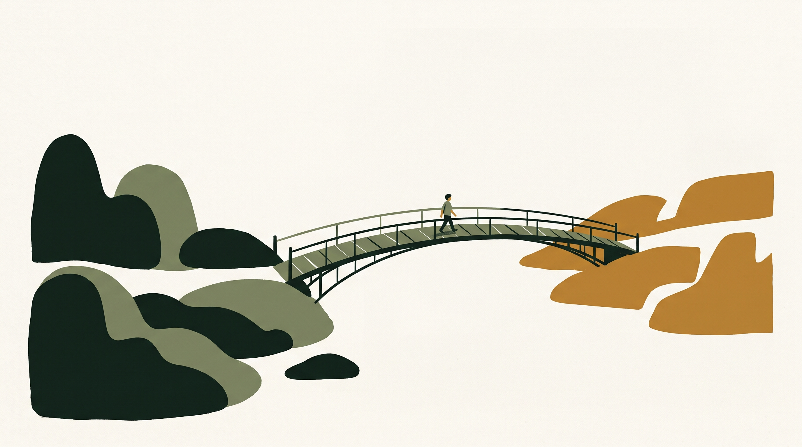
المجموعة الصغيرة — بين ثلاثة وخمسة
اخترنا هذا المدى بعد موازنة: الطفل الواحد يفقد أثر الأقران، والعشرة يحوّلون المعلّم إلى مذيع.
- يقرأ كلّ طفلٍ بصوته في كلّ حصّة — وهذا وحده يغيّر النتيجة.
- الخطأ يُصحَّح في لحظته لا بعد أسبوعٍ من ترسّخه.
- الطفل يسمع قرينه يخطئ ويُصحَّح فيتعلّم مرّتين.
- الحياء الذي يمنعه من السؤال في فصلٍ من عشرين يزول بين أربعة.
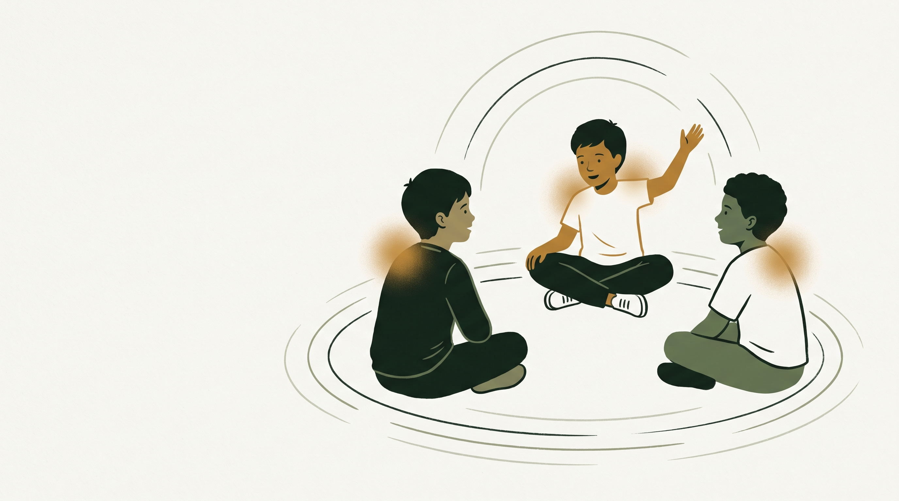
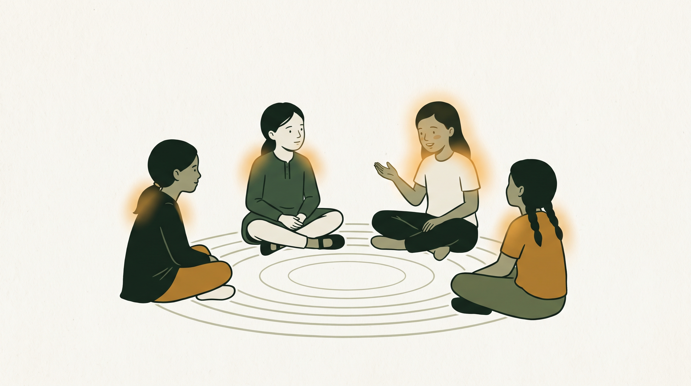
ونوفّر الحصّة الفرديّة لمن يحتاجها — للطفل الشديد الخجل، أو لمن يحتاج وتيرةً مختلفة.
ثلاث حصصٍ أسبوعيّاً — لا واحدة
المهارة القرائيّة تُبنى بالتكرار المتقارب لا بالجرعة المركّزة. الحصّة الأسبوعيّة الواحدة يُنفَق نصفها في استرجاع ما نُسي. وثلاث حصصٍ أسبوعيّاً تُبقي الأثر حيّاً بين الحصّة والتي تليها.
والحصّة ستّون دقيقة — أطول من قدرة طفلٍ على التركيز المتّصل، ولذلك تُقسَّم داخليّاً: عرضٌ قصير، فممارسة فرديّة، فنشاط جماعيّ، فإغلاق. لا يجلس الطفل ستّين دقيقةً يستمع.
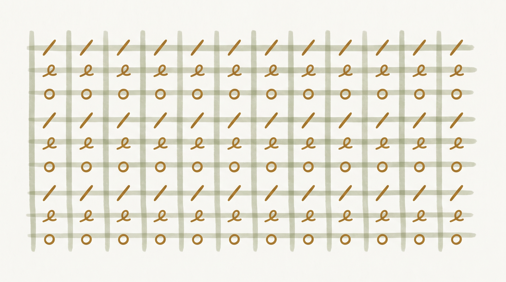
ويقرأ من اليوم الأوّل
لا مرحلة تمهيديّة طويلة يحفظ فيها أسماء الحروف قبل أن يُسمح له بالقراءة. من الحصّة الأولى يقرأ شيئاً — ولو مقطعاً من حرفين — لأنّ الشعور بأنّي قرأت هو الوقود الذي يُبقي طفلاً في برنامجٍ مدّته اثنا عشر أسبوعاً.
والخطأ جزءٌ من التعلّم لا عيبٌ يُخفى
المعلّم لا يوبّخ على خطأ، ولا يُسمح في فصولنا بأن يُسخر من متعثّر. الطفل الذي يخاف من الخطأ يتوقّف عن المحاولة، والذي يتوقّف عن المحاولة لا يتعلّم. هذه قاعدة صفّيّة معلنة، لا نصيحةً تُترك لاجتهاد المعلّم.
مسارٌ من مراحل — لا دورة منفردة
وكلّ مرحلة التحاقٌ مستقلّ تختاره الأسرة. لا امتداد تلقائيّ ولا مسار إجباريّ. وكثيرٌ من الأسر تكتفي بالأولى — وهذا خيارٌ مشروع نحترمه ولا نسعى إلى تجاوزه.
النصّ المرجعيّ يعمل بوصفه المدوّنة
استظهار نصٍّ مشكول يرسّخ الإملاء والصرف والإيقاع ترسيخاً لا يبلغه تمرين — وهذه حقيقةٌ لغويّة قبل أن تكون شيئاً آخر، ويعرفها التقليد التربويّ الأوروبيّ نفسه في استظهار الشعر والنصوص الكلاسيكيّة.
كما تُعلَّم اللاتينيّة على نصوصها الكلاسيكيّة: اختيار المادّة لغويٌّ في أصله، والقيمة تأتي معه لا بدلاً منه.
وخيطٌ يمشي من اليوم الأوّل
كتاب السيرة المصوَّر بالإنجليزيّة لا ينتظر المراحل. الطفل يقرؤه بلغته ومصوَّراً قبل أن يقرأ العربيّة أصلاً — فهو خيطٌ موازٍ يمشي مع المسار كلّه منذ يومه الأوّل، لا محطّةً في نهايته.
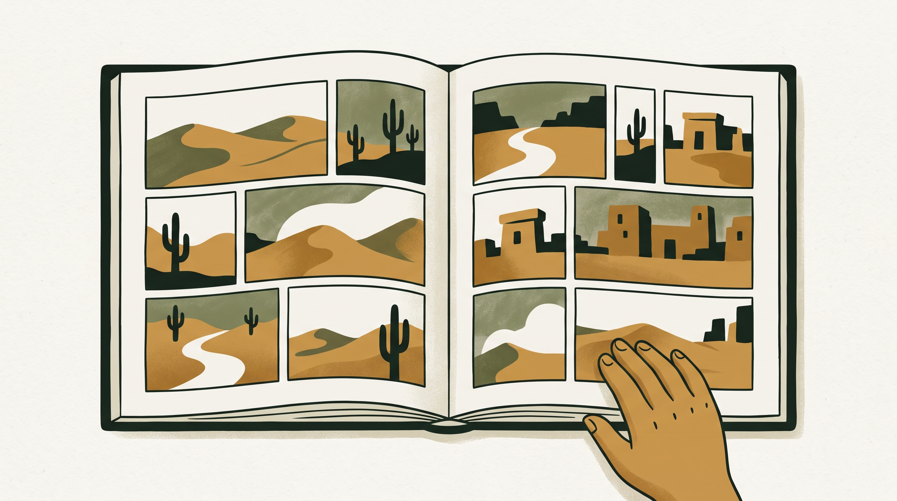
ما الذي تلتزم به الأسرة بالضبط
ولماذا أونلاين؟ ليس لأنّه أرخص، بل لأنّه الطريقة الوحيدة لإعطاء طفلٍ في مدينةٍ صغيرة معلّماً يتكلّم لغته ويتقن العربيّة معاً. هذا المعلّم قد لا يوجد في مدينته ولا في إقليمه كلّه. الأونلاين هنا ليس تنازلاً عن الحضور، بل هو ما يجعل البرنامج ممكناً أصلاً.
كيف نعرف أنّ الطفل تقدّم
من يدرّس أبناءكم
نعلم أنّ هذا أوّل سؤالٍ في ذهن أيّ أبٍ وأيّ جهةٍ مسؤولة، ونضعه قبل الحديث عن المنهج والتقنيّة.
شروط الاختيار
- إتقان العربيّة تأسيساً وتلاوةً
- إتقان لغة الطفل إلى حدّ الشرح والتعليم، لا مجرّد التفاهم
- خبرة في التعامل مع الأطفال في هذه الفئة العمريّة
- جاهزيّة تقنيّة للتدريس عن بُعد
- فحص خلفيّة جنائيّة بحسب متطلّبات كلّ بلدٍ يعمل فيه المعلّم
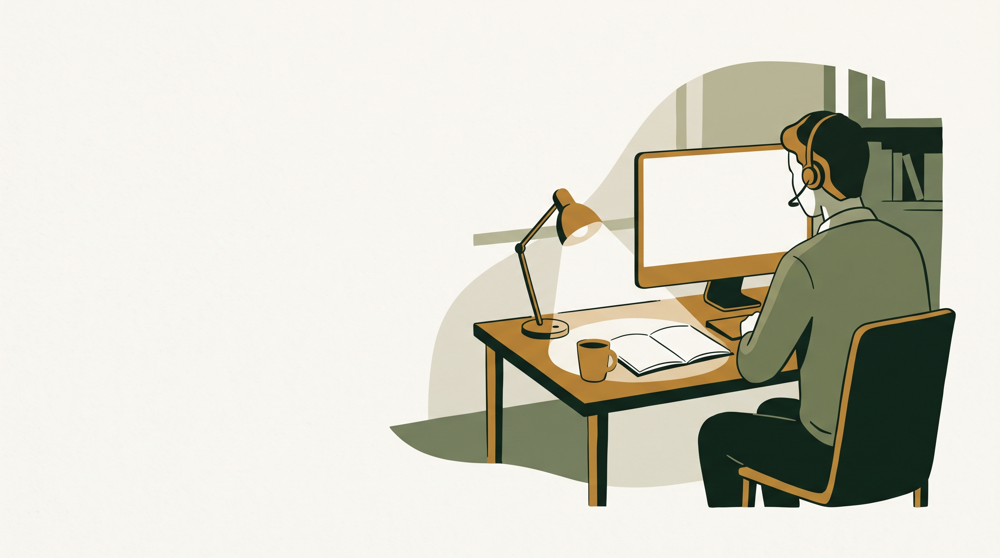
التدريب — ولا يُترك المعلّم بعده
لا يُسمح لمعلّمٍ بالتدريس قبل أن يجتاز تدريباً على المنهج نفسه: تسلسله، وأهدافه، والأخطاء الشائعة عند كلّ درسٍ وكيف تُعالَج. ولكلّ درسٍ دليلُ معلّم — وهذا ما يجعل خمسين معلّماً يدرّسون البرنامج نفسه بالجودة نفسها، وهو الفرق بين منهجٍ ومجرّد كتاب.
ويشمل التدريب قواعد التعامل مع الطفل: الحدود، وطريقة التصحيح، وما يُقال وما لا يُقال، وكيفيّة التصعيد عند أيّ ملاحظةٍ تخصّ سلامة طفل.
الإشراف المستمرّ
تقارير حصصه تُقرأ
تسجيلات من حصصه تُراجَع بالعيّنة
أداء أطفاله في تقييمات الانتقال يُقاس
فإن تعثّرت مجموعةٌ ظهر ذلك في أسبوعين لا في نهاية الفصل. وقواعد السلوك ليست توصياتٍ بل شروط عمل — ومخالفتها تعني إيقاف المعلّم فوراً عن التدريس ريثما يُنظر في الأمر.
نحن نشغّل مدرسةً أونلاين — والمنهج مكوّنٌ فيها لا هويّةٌ لها
هذا تمييزٌ جوهريّ يحدّد كلّ ما بعده.
نحن لسنا موزّعاً لمنهجٍ واحد، بل جهةٌ تبني وتشغّل بيئةً تعليميّة كاملة — المعلّم المؤهَّل، والمجموعة الصغيرة، والجدول المنتظم، والتقييم، والتقرير للأسرة، وضوابط الحماية — ثمّ تُدخل فيها منهجاً يستوفي معاييرها.
والتنوّع قاعدة مؤسِّسة
نعتمد أكثر من منهجٍ وأكثر من أسلوب: منهجٌ يناسب طفلاً في السابعة قد لا يناسب فتىً في الثانية عشرة؛ وأسلوبٌ ينجح مع من يسمع العربيّة في بيته قد لا ينجح مع من لا يسمعها.
والمنهج المعروض هنا أحد المناهج المعتمدة لدينا — وهو الأنضج والأكثر تجريباً في مساره — ونوسّع الخيارات بما يخدم الطفل، لا بما يخدم ارتباطاً بجهةٍ بعينها.
لا نتبنّى منهجاً لأنّه متاح — بل لأنّه يستوفي سبعة
- مخرَجٌ محدَّد وقابل للقياس — لا أهداف عامّة مفتوحة.
- تدرّجٌ مبنيّ، تُثبَّت فيه كلّ خطوةٍ قبل البناء عليها.
- دليل معلّم لكلّ درس — وإلّا فالجودة رهنُ اجتهادٍ فرديّ.
- قابليّة التوطين إلى لغة الطفل، لا الترجمة الحرفيّة.
- مادّة مفتوحة للمراجعة — كلّ نصٍّ متاحٌ ومترجَم.
- انسجامٌ مع القيم المدنيّة.
- تجريبٌ ميدانيّ سابق أو قبولٌ بالتجريب المحدود قبل التعميم.
وهذه المعايير تسري على كلّ منهج، بما فيه ما نعمل به اليوم. والنظام مبنيّ على هذا الأساس: المنهج فيه كيانٌ قائمٌ بذاته، والمجموعة تُسنَد إلى منهجٍ محدّد — فإضافة منهجٍ ثانٍ إعدادٌ لا إعادةُ بناء.
المنهج المعتمد اليوم — مكتوبٌ ومطبوعٌ ومجرَّبٌ ميدانيّاً
لا مسوّدة ولا فكرة. بُني وجُرِّب في تجمّعاتٍ تعليميّة حقيقيّة، وعُدّل مرّاتٍ على ما كشفه الفصل لا على ما بدا حسناً على الورق.
مصاغٌ بلغةٍ عصريّة قريبة من الطفل
لا بأسلوب المتون التقليديّة. الأمثلة والصور والمواقف مأخوذةٌ من عالمٍ يعرفه طفلٌ يعيش اليوم.
متدرّجٌ بخطواتٍ صغيرة مقصودة
كلّ درسٍ يضيف عنصراً واحداً ويثبّته قبل أن يُبنى عليه. لا قفزاتٍ تترك الضعيف خلفها.
قائمٌ على الممارسة لا الشرح
نسبة زمن الطفل الفاعل إلى زمن المعلّم المتكلّم مرتفعةٌ عمداً.
ومعه كتاب السيرة بالإنجليزيّة
بأسلوب القصص المصوّرة — عملٌ بصريّ متقن يقدّم السيرة قصّةً تُقرأ لا درساً يُلقَّن، وهو مادّةٌ قرائيّة وأخلاقيّة في آن.
من كتابٍ إلى تجربةٍ تعليميّة كاملة
المنهج المكتوب أساسٌ متين، لكنّه اليوم متاحٌ بصورةٍ واحدة: صفحةٌ يقرؤها الطفل ومعلّمٌ يشرحها. ونحن نعمل على تحويله إلى تجربةٍ متعدّدة الأشكال — لأنّ الأطفال لا يتعلّمون بطريقةٍ واحدة، ولأنّ ما بين الحصص متروكٌ اليوم بلا مادّة.
١ · الفيديو التعليميّ
مقطعٌ قصير لكلّ درس — ليس تسجيلاً لحصّة. الكتابة تُرسَم أمام العين، والنطق يُبطَّأ، والفرق بين حرفين متشابهين يُرى لا يُوصف. يستعدّ به قبل الحصّة، ويراجع بعدها، ويلحق به من غاب.
٢ · الأنيميشن
لما يقاوم الشرح اللفظيّ: كيف يتغيّر شكل الحرف بحسب موضعه؟ ولماذا تمدّ هذه الحركة الصوت؟ أمورٌ تُرى فتُفهَم في ثوانٍ. أداة توضيحٍ لا زينة.
٣ · الوسائل التفاعليّة
تمارين قصيرة بين الحصص بتغذيةٍ راجعة فوريّة. والأثر مضاعف: الطفل يمارس، والمعلّم يعرف أين تعثّر قبل أن تبدأ الحصّة.
٤ · الألعاب التعليميّة
حيث تخدم هدفاً تعليميّاً محدّداً لا لتزيين البرنامج. اللعبة تخدم الدرس ولا تحلّ محلّه — الحصّة الحيّة هي القلب، والوسائط تحيط بها.
٥ · التوطين لا الترجمة
الأمثلة من محيط الطفل، والمقارنات الصوتيّة على لغته هو. نسخةٌ لكلّ لغة تدريس، لا نسخةٌ واحدة مترجمة إليها.
٦ · دليل المعلّم
لكلّ درسٍ دليلٌ يبيّن هدفه، والأخطاء الشائعة عنده، وكيف يُعالَج كلٌّ منها، وما الذي يُصحَّح فوراً وما يُترك لحينه.
ما يقاوم الشرح اللفظيّ — يُرى فيُفهَم في ثوانٍ
وهذه ليست صورةً للأنيميشن الموعود، بل عيّنةٌ منه تعمل أمامكم على هذه الشاشة.
الأطفال شركاء في التطوير — لا متلقّون له
الطفل الذي يشارك في صنع المادّة يتعلّم منها أكثر ممّا يتعلّم من مادّةٍ صُنعت له.
مثالٌ يوضّح الفكرة: عند تحويل قصص المنهج إلى أفلامٍ ثلاثيّة الأبعاد، تُطرح على الأطفال مسابقةٌ لتخيّل شخصيّةٍ من القصّة وفق مواصفاتٍ محدّدة، ثمّ يُبنى العمل النهائيّ على التصوّر الفائز بتطويرٍ احترافيّ — فيرى الطفل شخصيّةً تخيّلها هو تتحرّك على الشاشة.
تربويّاً
ينتقل الطفل من متلقٍّ إلى صانع، وهذا وحده يغيّر علاقته بالبرنامج كلّه.
تعليميّاً
لكي يتخيّل الشخصيّة عليه أن يفهم القصّة فهماً دقيقاً. فالمسابقة تمرين قراءةٍ متنكّرٌ في هيئة لعبة.
تطويريّاً
نرى ما يفهمه الأطفال وما يسيئون فهمه ممّا يرسمون ويكتبون — تغذيةٌ راجعة لا يعطيها اختبار.
والضوابط جزءٌ من التصميم لا استدراكٌ عليه
- موافقة وليّ الأمر مكتوبة قبل أيّ مشاركة — محدّدة الغرض والمدّة، وقابلة للسحب في أيّ وقت.
- لا مسابقة بفائزٍ واحد ومئة خاسر — كلّ مشاركةٍ تُعرَض، وكلّ اسمٍ يُذكر. المشاركة نفسها هي الجائزة.
- لا تُنشر صورة طفلٍ ولا اسمه الكامل إلّا بإذنٍ منفصلٍ وصريح.
- لكلّ مسابقةٍ هدفٌ تعليميّ مكتوبٌ قبل إعلانها — وإلّا فلا تُقام. المسابقة أداةٌ تعليميّة لا حملة تسويق.
وهذا اتجاهٌ نتبنّاه، وتفاصيله تُصمَّم بالتشاور معكم — ونرحّب بأن تشاركوا في وضع ضوابطه.
دورة تطويرٍ من ستّ خطوات
من يطوّر: فريق تأليفٍ متخصّص لكلّ منهجٍ معتمد، يعمل وفق معايير الاعتماد، وتحت إشرافٍ تربويّ متوافقٍ مع المعايير والمبادئ التربويّة المتّفق عليها والمعتمدة رسميّاً في بلد التطبيق.
- تحديد الحاجة من الفصل — أيّ درسٍ يتعثّر عنده الأطفال أكثر؟ البيانات تسبق القرار: تقارير الحصص وأداء التقييمات تكشف مواضع التعثّر قبل أن يشعر بها أحد، ويُضاف إليها ما تكشفه مشاركات الأطفال أنفسهم.
- التصميم التربويّ قبل الإنتاج — يُكتب الهدف ومعيار النجاح أوّلاً ثمّ يُصمَّم الشكل. لا نُنتج مادّةً جميلة ثمّ نبحث لها عن هدف.
- الإنتاج.
- المراجعة على ثلاث عيون — تربويّة: هل تحقّق الهدف؟ · لغويّة: هل النصّ سليم؟ · وثقافيّة: هل تناسب طفلاً يعيش في أوروبا؟
- التجريب على مجموعةٍ محدودة قبل التعميم.
- القياس والتعديل.
والمنهج وثيقةٌ حيّة لا نصٌّ نهائيّ؛ يُراجَع دوريّاً على ما يكشفه الواقع.
خارطة الإصدارات
والجدول الزمنيّ التفصيليّ يُشارَك عند الاتفاق.
كلّ نصٍّ يُقرأ في الحصّة متاحٌ كاملاً ومترجَماً
لأيّ جهةٍ شريكة أو رقابيّة، ولوليّ الأمر — عند الطلب. لا مادّةٌ مغلقة، ولا نصٌّ لا نقبل أن يُقرأ، ولا محتوى بلغةٍ لا يفهمها الشريك.
نذكر هذا صراحةً لأنّنا نعلم أنّه السؤال الذي يستحقّ أن يُطرح على أيّ برنامجٍ يتعامل مع أطفال.
ومن يطلب الثقة عليه أن يقدّم ما يُتحقَّق منه، لا أن يطلب التصديق.
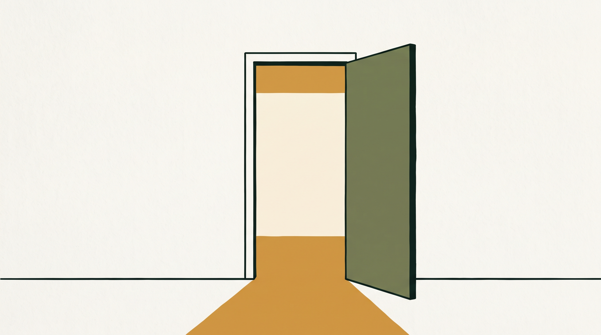
البرنامج في بنيته برنامج قراءة، ومدوّنته نصوصٌ كلاسيكيّة، ومكوّنه القيميّ معلنٌ ومكتوب. ونقبل أن يُتحقَّق من ذلك بحضور أيّ حصّة.
مرجعيّة هذه القيم إسلاميّة. نقولها ولا نخفيها
منهاج لا يعلّم القراءة فحسب. الأسرة التي تسجّل ابنها لا تطلب مهارةً تقنيّة مجرّدة؛ تريد أن يصل ابنها إلى نصٍّ يحمل معنى، وأن يكبر على أخلاقٍ تعتزّ بها. وقد اخترنا أن نكون صريحين في هذا بدل أن نخفيه خلف عباراتٍ محايدة.
السبب الأوّل
أنّها الحقيقة، والغموض في وصف ما يُقدَّم لطفلٍ يستحقّ أن يُقرأ إخفاءً.
السبب الثاني
أنّ الوضوح شرط الشراكة: الجهة التي تعرف بالضبط ما يُقدَّم لأبناء مجتمعها تستطيع أن تقرّر عن علم — وهذا أفضل لنا ولها من قبولٍ مبنيٍّ على غموضٍ ينكشف بعد سنة.
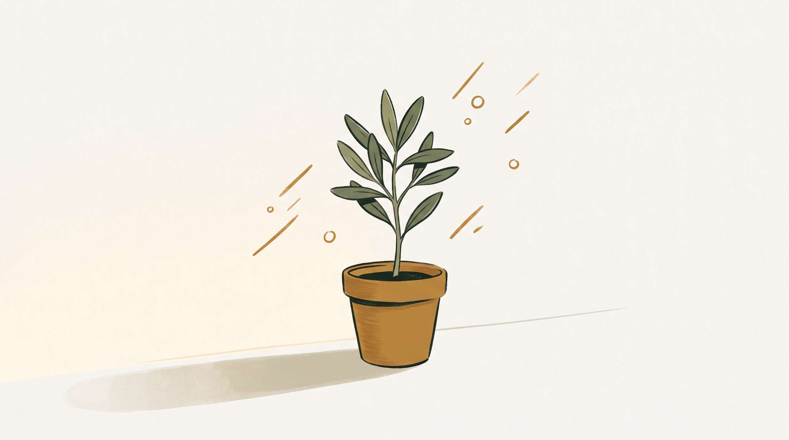
القيم المستهدَفة — وكيف تظهر عمليّاً
ثلاث قنوات — ولا درسٌ منفصل
لا حصّة في برنامجنا اسمها «حصّة القيم». القيمة التي تُلقَّن وعظاً تُنسى، والتي تُمارَس تبقى.
(أ) نصوص القراءة
الطفل يتعلّم الحرف على نصّ، والنصّ يحمل معنى. واختيارها مقصود: يتدرّب على القراءة وهو يقرأ ما يستحقّ أن يُقرأ.
(ب) كتاب السيرة المصوَّر
السيرة قصّةً لا وعظاً: الطفل يتابع الحكاية، والقيمة تصله عبر المشهد لا عبر التوجيه المباشر.
(ج) قواعد الحصّة وسلوك المعلّم — وهذه أقواها
يتعلّم احترام الدور من انتظاره دورَه، والصدق من معلّمٍ يقول «لا أعرف، سأتحقّق»، والرحمة من فصلٍ لا يُسخر فيه من متعثّر. ما يُمارَس أبلغ ممّا يُقال.
وانسجامها مع القيم المدنيّة
نعرف أنّ برنامجاً تربويّاً يُقدَّم لأطفالٍ في أوروبا يُقاس بالقيم الأساسيّة للدولة الديمقراطيّة القائمة على سيادة القانون، ونقدّم المقابلة صراحةً:
وموقفنا من التعليم الهولنديّ صريح: برنامجنا مكمّلٌ لا بديل. يجري خارج أوقات المدرسة، ولا يزاحم مقرّراتها، ولا يقدّم نفسه بديلاً عنها. الطفل الذي نعلّمه تلميذٌ في مدرسته الهولنديّة أوّلاً — ونحن نضيف إليه مهارةً لغويّة، ولا ننزعه من محيطه.
كان أمامنا أن نستعمل أدواتٍ جاهزة — ورفضنا
منصّة اجتماعات، وجدولٌ في ورقة، ومجموعة مراسلة. رفضنا ذلك لأنّ ما يميّز برنامجاً يعمل مع أطفالٍ عن بُعد ليس جودة الفيديو، بل ما يستطيع أن يضمنه للأهل وللجهة الشريكة.
فبنينا نظاماً خاصّاً بنا، وجعلنا ضوابط الحماية والشفافيّة مبنيّةً في تصميمه لا مكتوبةً في سياسةٍ تُوقَّع ثمّ تُنسى.
والفرق بين النوعين أنّ السياسة تُخالَف، والتصميم لا يُخالَف.
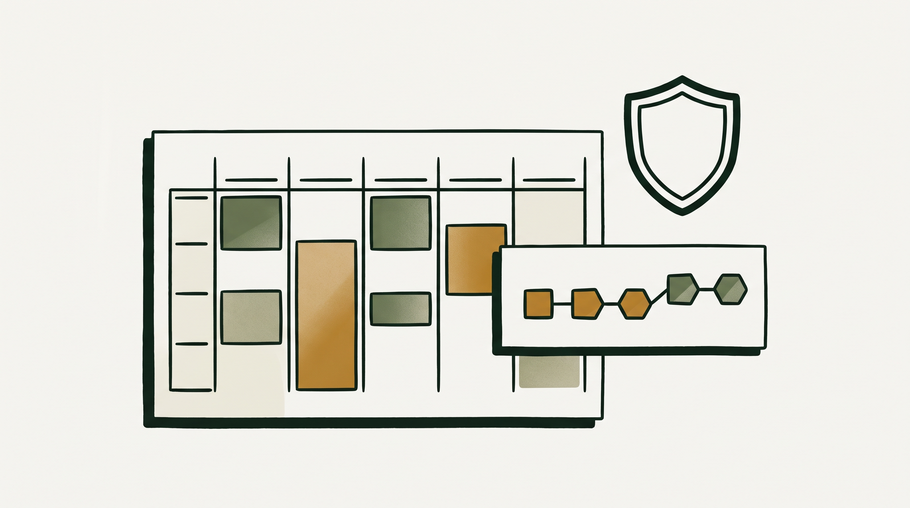
رحلة الطفل داخل النظام
ضوابط الحماية — مبنيّةٌ في النظام
وهذه ليست وعوداً بل خصائص قابلة للتحقّق. وندعوكم إلى أن تختبروها بأنفسكم على حسابٍ تجريبيّ — لا أن تصدّقوها على الورق.
كيف نعرف أنّ الحصّة كانت جيّدة
معظم البرامج لا تعرف. ونحن نعرف من أربعة مصادر:
تقرير المعلّم بعد كلّ حصّة
سجلّ الحضور ونمطه
مراجعة التسجيلات بالعيّنة
أداء الأطفال في تقييمات الانتقال
فإن تعثّرت مجموعةٌ ظهر ذلك في أسبوعين لا في نهاية الفصل — ويُعالَج بينما العلاج ممكن.
والأسرة شريكٌ لا متلقٍّ
وليّ الأمر يرى جدول ابنه، وتقريراً بعد كلّ حصّة، وتقدّمه عبر المستويات، وسجلّ حضوره — بلغته هو لا بلغة المعلّم. وهذا مقصود: الطفل الذي يتابعه أبوه يُكمل، والذي لا يُتابَع ينسحب. فالتقرير المنتظم ليس إجراءً إداريّاً بل أداةٌ تعليميّة.
موقع نماء مزدوج — ولا نخلط بين وجهيه
أوّلاً · مجتمعٌ له أسره وأطفاله
ونحن نقدّم لهم برنامجاً.
ثانياً · جهةٌ لها ثقلها وشبكتها
بين المدارس والمؤسّسات الدينيّة والعربيّة في هولندا — وهذه الشبكة هي الباب الذي لا يُفتح بالإعلان.
والترتيب بين الوجهين مقصود: لا نطلب من نماء أن تعرّف بما لم تجرّبه. نبدأ داخلها، فإذا اقتنعت بما رأت، صارت تتحدّث عن تجربةٍ خاضتها لا عن عرضٍ قُدِّم لها.
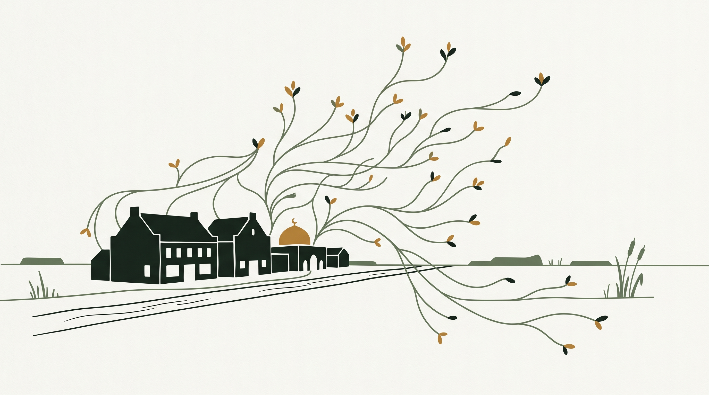
ستّ صيغ في ثلاثة مسارات
المسار الداخليّ — نماء ومجتمعها
المسار الخارجيّ — نماء بوّابةً إلى المؤسّسات
المسار الأبعد
ونموذج العائد يُتّفق عليه صراحةً وكتابةً قبل أوّل إحالة. جهد نماء في فتح الأبواب عملٌ يُقدَّر ولا يُستَهلك مجّاناً، والغموض في هذا الباب يفسد الشراكات أكثر ممّا يفسدها الخلاف.
تجربةٌ محدودة داخل نماء
ومعايير التقييم يُتّفق عليها قبل البدء لا بعده.
ونقبل أن تكون النتيجة سلبيّة وأن تُنشر كما هي — فبرنامجٌ لا يحتمل هذا الشرط لا يستحقّ أن يُبنى عليه، ولا يستحقّ أن تضع نماء اسمها خلفه.
وهذا التقرير — لا هذه الوثيقة — هو ما تحمله نماء إلى المؤسّسات الأخرى.
ما نرجوه من نماء
الآن:
- لقاءٌ نعرض فيه المنهج والمنصّة عمليّاً — لا شرائح عرض، بل النظام نفسه وحسابٌ تجريبيّ تختبرونه بأيديكم.
- مراجعةٌ نقديّة لموادّنا وملاحظاتٌ مكتوبة. نريد أن تُراجَع لا أن تُقبل مجاملةً.
- الاتفاق على معايير تقييم التجربة قبل بدئها، وعلى صيغة التعاون ونموذج العائد.
وبعد التجربة، إن أقنعت:
- التعريف بالبرنامج في شبكة نماء من المدارس والمؤسّسات.
- حضورٌ معنا في أوّل اللقاءات مع تلك المؤسّسات.
ولا نطلب الرابع والخامس قبل الثالث.
الملاحق
ومن يطلب الثقة عليه أن يقدّم ما يُتحقَّق منه

شكراً لوقتكم. ننتظر ملاحظاتكم المكتوبة، ولقاءً نعرض فيه النظام نفسه.